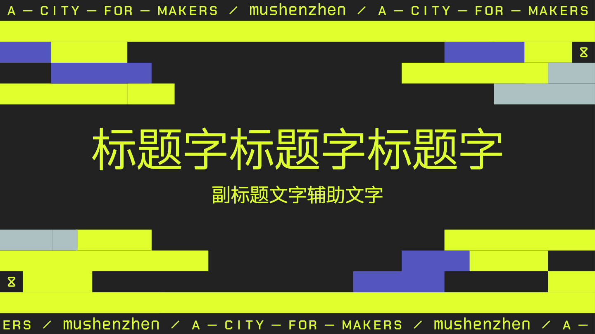
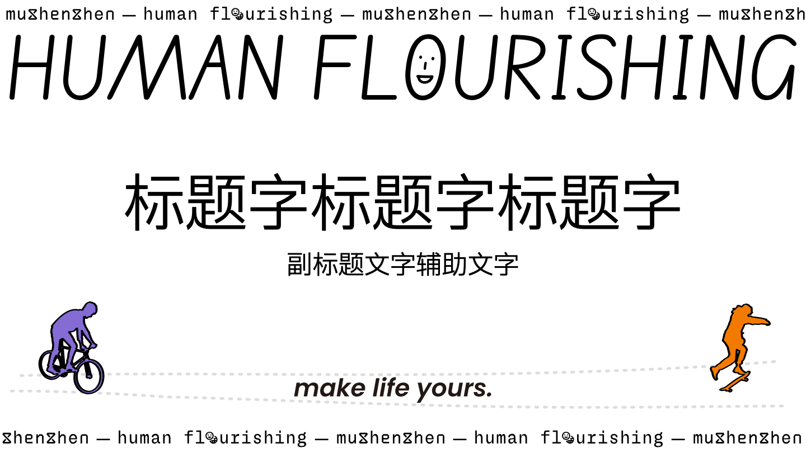

PRESENTATION TEMPLATES
选好品牌，开始分享。
三套设计师原版演示模板。直接预览，用 PowerPoint 编辑，或把模板包交给你的 Agent。

怎么使用
用 PPT：下载 PPTX 后替换标题和正文。品牌装饰为固定底图，中文字体随 HTML / Agent 包提供，建议先安装。
用 Agent：下载并解压对应模板包，让 Agent 先读 AGENTS.md，再按你的内容制作。HTML 可以离线预览、编辑文字和保存；转发时请连同素材和字体一起打包。
原始模板为 16:9。文案过长时建议拆页，保持字号和品牌图形的位置。